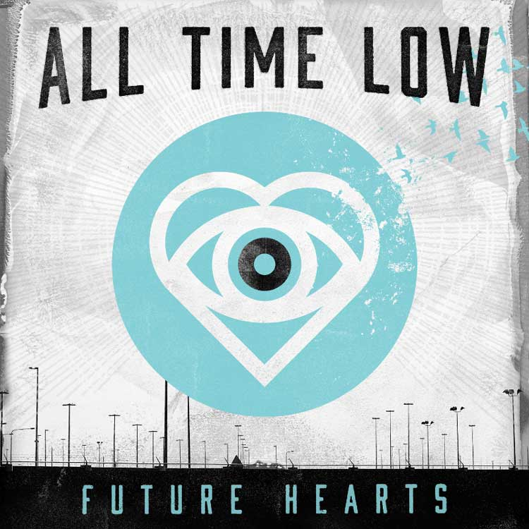
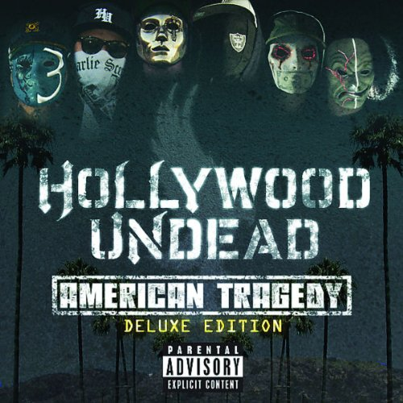
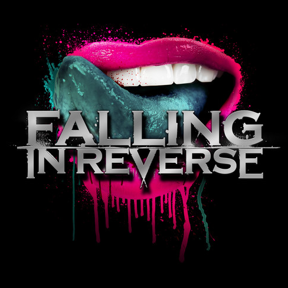
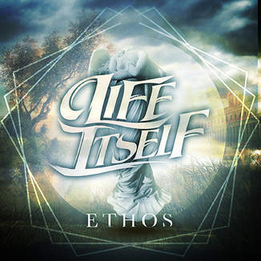
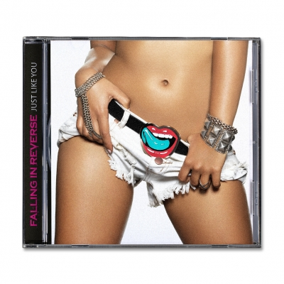

Future Hearts
- 1. "Satellite" 2:24
- 2. "Kicking & Screaming" 3:26
- 3. "Something's Gotta Give" 3:09
- 4. "Kids in the Dark" 3:36
- 5. "Runaways" 3:34
- 6. "Missing You" 4:04
- 7. "Cinderblock Garden" 3:35
- 8. "Tidal Waves" (featuring Mark Hoppus of Blink-182) 4:09
- 9. "Don't You Go" 3:05
- 10. "Bail Me Out" (featuring Joel Madden of Good Charlotte) 3:32
- 11. "Dancing with a Wolf" 3:39
- 12. "The Edge of Tonight" 3:51
- 13. "Old Scars / Future Hearts"

American Tragedy
- 1. "Been to Hell"
- 2. "Apologize"
- 3. "Comin' in Hot"
- 4. "My Town"
- 5. "I Don't Wanna Die"
- 6. "Hear Me Now"
- 7. "Gangsta Sexy"
- 8. "Glory"
- 9. "Lights Out"
- 10. "Coming Back Down"
- 11. "Bullet"
- 12. "Levitate"
- 13. "Pour Me"
- 14. "Tendencies"

Dying Is Your Last Fashion
- 2. "When I Go Out, I Want to Go Out on a Chariot of Fire" 4:01
- 3. "Situations" 3:08
- 4. "The Guillotine" 4:32
- 5. "Reverse This Curse" 3:41
- 6. "Cellar Door" 4:36
- 7. "There's No Sympathy for the Dead" 5:25
- 8. "My Apocalypse" 4:43
- 9. "Friends and Alibis" 4:10
- 10. "Not Good Enough for Truth In Cliché" 3:50
- 11. "The Day I Left the Womb"
This War Is Ours
- 1. "We Won't Back Down" 3:30
- 2. "On to the Next One" 3:08
- 3. "Ashley" 3:27
- 4. "Something" 3:38
- 5. "The Flood" 3:33
- 6. "Let It Go" 3:29
- 7. "You Are So Beautiful" 2:47
- 8. "This War Is Ours (The Guillotine II)" 4:26
- . 9. "10 Miles Wide" (featuring Josh Todd of Buckcherry) 2:47
- 10. "Harder Than You Know" 4:20
- 11. "It's Just Me" 4:56

Ethos
- Ruthless
- Emotionless
- Hope

Just Like You
- 1. "Chemical Prisoner" 4:20
- 2. "God, If You Are Above ..." 3:36
- 3. "Sexy Drug" 3:14
- 4. "Just Like You" 3:32
- 5. "Guillotine IV (The Final Chapter)" 3:35
- 6. "Stay Away" 3:21
- 7. "Wait and See" 4:38
- 8. "The Bitter End" 4:03
- 9. "My Heart's To Blame" 3:49
- 10. "Get Me Out" 3:45
- 11. "Die For You" 3:44
- 12. "Brother"